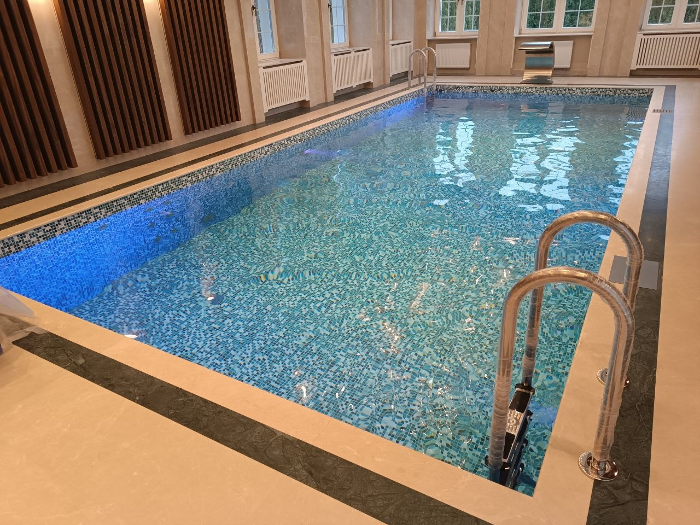

Введение
Как выбрать бассейн для дома: сначала определите, как будете им пользоваться
Начните не с формы чаши, а с ответа на три вопроса: кто будет плавать, в какие месяцы и как часто. Семейное купание по выходным, регулярные тренировки и бассейн рядом с баней требуют разных размеров, глубины, температуры и режима обслуживания.
После этого проверьте ограничения участка или здания, сравните тип чаши и способ водообмена, а затем оцените оборудование и расходы на эксплуатацию. Ниже — последовательность, которая поможет составить задание проектировщику; окончательные размеры и инженерные решения определяют по обследованию и проекту.
Критерии
Четыре решения, которые определяют выбор
Запишите число пользователей, возраст детей, занятия и желаемую температуру. Для сезонного купания и круглогодичной эксплуатации различаются требования к защите чаши, подогреву и зимнему режиму.
Сценарий и сезон
Для уличной чаши оцените солнечное освещение, деревья, ветровую нагрузку как фактор загрязнения, приватность и связь с террасой. Для крытого бассейна заранее обсудите конструкцию здания и отдельные требования к влажному помещению с профильными проектировщиками.
Место и доступ
Бетон даёт больше свободы в форме и размерах, но требует проектирования конструкции и отделки. Композитная чаша выбирается из доступных заводских форм, а монтаж выполняется по инструкции производителя и с учётом условий участка. Сравнение вариантов — в статье «Бетонный или композитный бассейн».
Тип чаши
Оцените, кто будет контролировать воду и чистить чашу: владелец или сервисная организация. Подогрев, накрытие и автоматика меняют удобство и первоначальную комплектацию, поэтому их стоит обсуждать вместе со сценарием, а не выбирать по списку опций.
Уход и оснащение
Перед выбором решите, кто будет контролировать воду и выполнять чистку. Это влияет на нужный уровень автоматизации, выбор накрытия и договорённость о сервисе.
Расчет
Получить расчет стоимости
Подготовим ориентир бюджета, состав работ и инженерные решения под ваш участок, дом и желаемый формат эксплуатации.

Инженерия
Скиммерная или переливная схема: выбирайте по проекту и эксплуатации
В скиммерной схеме вода забирается с поверхности через скиммеры; в переливной — через переливной лоток в компенсационную ёмкость. Это разные компоновки чаши и циркуляции, а не только два варианта внешнего вида борта.
Сравнивая варианты, попросите показать на плане точки водозабора и возврата, оборудование и доступ для его обслуживания. Для переливной схемы дополнительно важны лоток, ёмкость и отметки уровней. Равномерность движения воды нельзя определить только по объёму чаши.
Исходные данные для первого обсуждения: длина, ширина, глубина или расчётный объём; назначение и сезон использования; уличное или внутреннее размещение; предполагаемый тип чаши и водообмена. Для точного решения понадобятся обследование участка/здания и инженерный проект.
Подробное сопоставление схем дано в материале «Скиммерный или переливной бассейн». Здесь важно зафиксировать выбранный вариант до согласования конструкции и сметы.
- Попросите показать на плане положение чаши, маршруты труб и точки подключения до утверждения архитектуры участка.
- Сопоставьте отделку с местом установки, режимом эксплуатации и инструкциями выбранной системы материалов.
- Определите, какие операции автоматизировать и какие параметры контролировать вручную; автоматика не отменяет регулярное обслуживание.
Проект
Обсудить проект бассейна
Разберем план участка, архитектуру дома, сроки и желаемый уровень автоматизации, чтобы предложить решение без визуальных и технических компромиссов.
Этапы
Порядок выбора до заказа
Бюджет сравнивайте по одинаковому составу работ, а не по цене чаши отдельно. В предложении должны быть ясны включённые работы, оборудование, отделка и исключения. Для вопросов к смете используйте отдельный чек-лист в статье «Смета на строительство бассейна».
Попросите проектировщика объяснить, какие решения уже подтверждены исходными данными, а какие пока предварительные. Не принимайте типовые сроки и суммы за обещание для вашего участка: они зависят от состава работ и условий проекта.
-
01
Сформулируйте задачу
Опишите пользователей, сезон, частоту купания и назначение бассейна. Укажите, что для вас важнее: тренировки, отдых, детское купание или несколько сценариев.
-
02
Проверьте участок или здание
Подготовьте план участка или дома и известные ограничения. Уточните возможность подъезда техники, расположение чаши и доступные инженерные точки; неизвестные условия отметьте для обследования.
-
03
Сопоставьте чаши
Сравните бетон и композит по требуемой форме, комплектации, способу монтажа и документам производителя. Не выбирайте только по цене изделия.
-
04
Определите состав системы
Согласуйте схему водообмена и основные функции оборудования под ваш режим. Детальный подбор насоса, фильтра и труб выполняют по расчётной схеме.
-
05
Сравните предложения
Сведите предложения к общей таблице: что входит, что исключено, какие материалы и модели указаны, какие работы оплачиваются отдельно и какие исходные данные ещё нужны.
Рекомендации
Чего не стоит решать по фотографии или одной цене
Фото не показывают грунтовые условия, трассы труб, объём работ и доступ к оборудованию. Цена только за чашу также не позволяет сравнить готовые решения. Попросите сопоставимый состав предложения и список допущений.
Не фиксируйте размеры, глубину, тип водообмена или оборудование до проверки их совместимости с участком и сценарием. Для следующего шага соберите исходные данные и обсудите их с проектировщиком; ориентир цены и состав затрат разобраны отдельно в статьях «Цена бассейна» и «Смета на строительство бассейна».
Консультация
Заказать консультацию
Ответим на вопросы, оценим исходные данные и предложим следующий шаг: концепцию, выезд специалиста или предварительный расчет.